|
Tutorial 1 Part 1 - VC6
Technical terms used in this tutorial can be found in the glossary. This tutorial assumes the ReplicaNet files are in the default location used by the installer.
This tutorial shows:
-
How to create a simple ReplicaNet project from scratch, using Microsoft Visual Studio 6.
-
How to set-up a new project with the necessary header include files.
-
Prepare some custom build rules to build ROL files using the ROLCompiler tool.
Start Microsoft Visual Studio C++ 6.0
If there is a workspace loaded then Menu bar->File->Close Workspace.
Now create our workspace.
Menu bar->File->New...->"Projects" Tab->Win32 Console Application
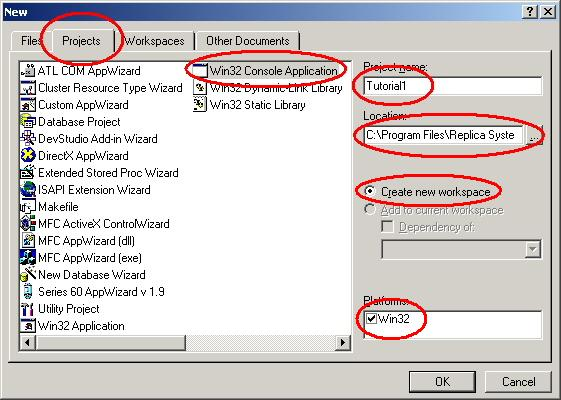
Change the "Location:" Box
to "C:\Program Files\Replica Software\ReplicaNet\"
Change the "Project name:" Box
to "Tutorial1"
The "Location" Box
will then show "Tutorial1" being added to the path name.
Check "Create new workspace" is enabled.
Check that "Platforms:" has the "Win32" option
enabled.
Click "OK".
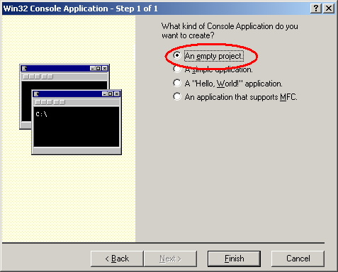
Check that "An empty project" is enabled.
Click "Finish".
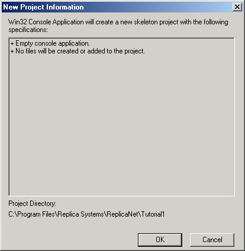
This dialog tells you what files are about to be created for the project. Click "OK".
Workspace created
The Workspace view should display. If this does not display then you can open
the display by choosing:
Menu bar->View->Workspace
| Open the tree view for "Tutorial1 files" by clicking on the cross mark. | 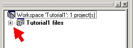 |
| A view containing "Source Files", "Header Files" and "Resource Files" should then be displayed. | 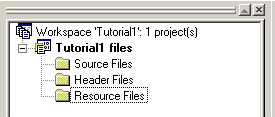 |
Open the menu above the "Tutorial1 files" entry in the list. Choose "New Folder...".
|
In the dialog's boxes "Name of the new folder:" = "ROL Files" and "File extensions:" = "rol". |
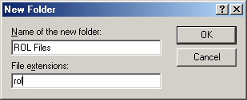 |
Click "OK".
Adding an extra folder helps to keep ROL files, that describe objects, separate from our other source files.
Open the menu above the "Tutorial1 files" entry again and choose "New Folder..." once more.
| In the dialog's boxes "Name of the new folder:" = "Compiled Objects" and leave the other box blank. | 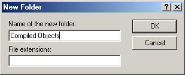 |
Click "OK".
This folder is where the compiled ROL file output files can go to keep the project tidy.
Open the menu on "Tutorial1 files" and choose "Settings...".
Change "Settings For:" to
"All Configurations".
Choose the "C/C++" tab.
Change the "Category:" to "Preprocessor"
Change "Additional include directories:" to
"..\ReplicaNetPublic\Includes"
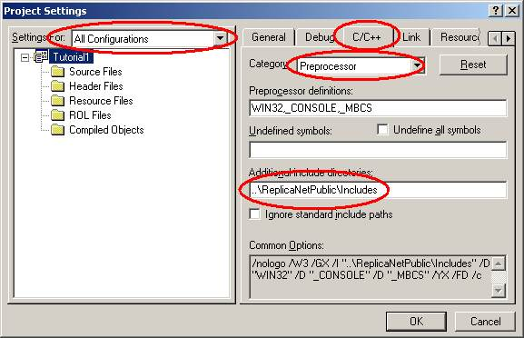
Choose the "C/C++" tab again.
Change the "Category:" to "Code Generation".
Change "Settings For:" to "Win32 Release".
Change the "Use run-time library:" to "Multithreaded".
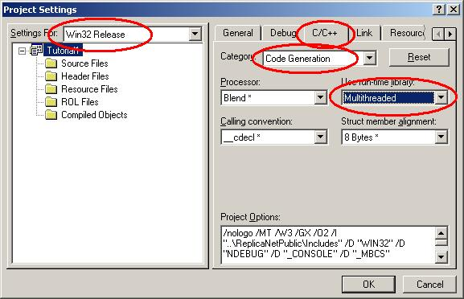
Change "Settings For:" to "Win32 Debug".
Change the "Use run-time library:" to "Debug Multithreaded".
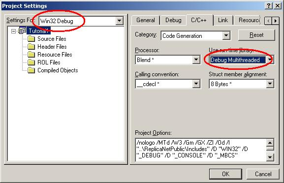
Click "OK".
Start adding files to the project.
Menu bar->File->New->"Files" Tab->Choose "C++ Source File"
Change the "File name:" box to "main.cpp".
Check the "Add to project:" item is checked and the "Tutorial1" item is selected.
Check the "Location:" box is correct and contains "C:\Program Files\Replica Software\ReplicaNet\Tutorial1"
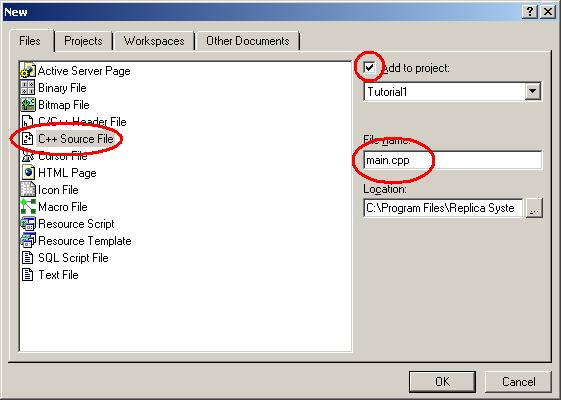
Click "OK".
Now add the ReplicaNet amalgamated source file found in "C:\Program Files\Replica Software\ReplicaNet\ReplicaNetPublic\AmalgamatedReplicaNet.cpp" using similar steps as the above.
NOTE: After adding a file to the project workspace you might be asked if you want to add it to source control. You can usually choose no for now.
However source control is a good idea for projects. Dealing with source control is really beyond the scope of this tutorial.
The workspace view will then update to contain the new file and put the new file in the "Source Files" folder.
To view the filenames in each folder click the cross
box to the left of the folder name.
| 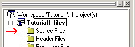 | Gives | 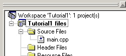 |
To edit each file you can double click the file name and the file will display. The newly created "main.cpp" file should be empty.
Now we can start writing our ReplicaNet program.
Double-click the "main.cpp" filename to edit the file and add this code to the "main.cpp" file.
Menu bar->File->New->"Files" Tab->Choose "Text File"
Change the "File name:" box to "Application.rol".
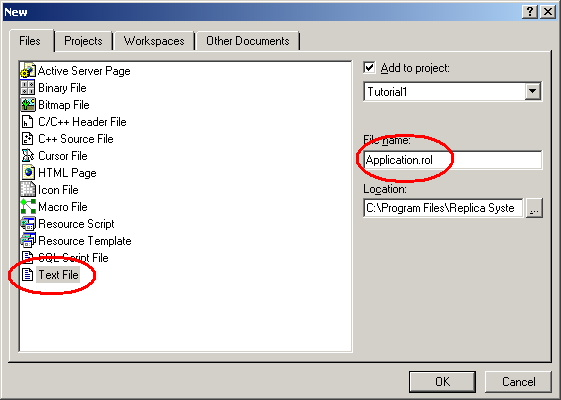
Click "OK".
The workspace view will then update to contain the new file and put the new file in the "ROL Files" folder.
Click the cross box to the left of "ROL Files" in the workspace view to see the newly added "Applicatio.rol" filename.
Double-click the "Application.rol" filename to edit the file and add this code:
Tip: When editing rol files, the file must end with a carriage return otherwise the RNROLCompiler will display the message "warning : EOF encountered while close braces needed".
Custom build rules for ROL files
Now we need to tell VC6 how to compile ROL files. This uses the custom build rules available to us.
Open the workspace projects settings by opening the menu on "Tutorial1" in the workspace view and choosing "Settings..."
Open the "ROL Files" folder and select the "Application.rol" file.
Change "Settings For:" to be "All Configurations".
Choose the "Custom Build" tab.
In the "Commands" box change in to be:
"..\ReplicaNetPublic\RNROLCompiler\bin\rnrolcompiler.exe $(InputName).rol $(InputName).cpp $(InputName).h"
In the "Outputs" box change it to contain "$(InputName).cpp" and "$(InputName).h" on two
separate lines.
The dialog should look like:
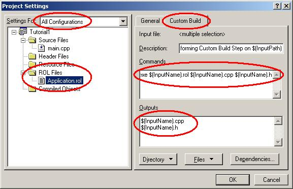
Tip: Remember how to update the custom build settings because you will need to repeat it for every ROL file you add to your application. VC6 does not inherit settings for newly added files from the folder or file type.
Click "OK".
The "Application.rol" file will generate two source files called "Application.cpp" and
"Application.h" when the project is built.
These files, even though they are not generated yet, need to be
compiled.
To add these files to the project open a menu over "Tutorial1 files" in the workspace view.
Choose "Add File to Project...".
In the file open dialog, change the "File name:" box to "Application.cpp".
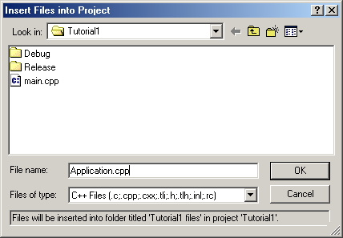
Click "OK" and answer "Yes" to the warning box that tells you about the file not existing.
Add "Application.h" using the same method as for "Application.cpp" remembering to use the "Application.h" name this time. Answer yes again to the question about the file not existing.
You might want to add these generated files to the
"Compiled Objects" folder to keep everything tidy.
Try a build.
Choose Menu bar->Build->Rebuild All
You should see this output in the build output window.
Now looking at the "Application.cpp" and "Application.h" you should see some generated code from the ROL compiler.
NOTE: At the top of these two source files is "/* Auto-generated with RNROLCompiler
Vx.x.x.x don't edit */" which tells you the files get generated by the ROL Compiler. Changes in these files will get lost if they are edited.
At this stage the application does not do much except allocate a new ReplicaNet class.
Now we can start to add C++ classes. These classes could be objects in a game that control enemies or the player, for example.
This is covered in tutorial 1 part 2.